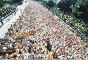

ho questa malsana idea: farmi tre giorni di vacanza.
si avvicina la sacra pasqua dei miei coglioni, al lavoro sono mesi che faccio dalle 8 alle 10 ore al giorno, innumerevoli fattori hanno contribuito a smontarmi le palle e, come se non bastasse, condivido con il buon pallotron una caratteristica che alla lunga stanca ancora di più: m’incazzo, e la gente inizia a temere. di fatto penso che vada estremamente bene che la gente abbia paura e timore, visto che tanto non cambia mai un cazzo a meno che non ti fai le cose da solo o non prendi a calci in culo qualcuno. per conto mio prendo ad esempio la rivolta dei minatori della tennessee coal mine company del 1891 (scusa guernica se le mie indicazioni precedenti erano errate). poi se volete vi leggete la vicenda, che implica la violenza, la santa violenza.
detto ciò – decido di partire. ma sì, andiamo, pigliamo un aereo, facciamo questo volo ad amsterdam per disintossicarci un po’. il volo – acquistato grazie alla generosa donazione di punti millemiglia da parte di un parente persuaso dalle mie crisi isteriche – era ieri sera alle 21.00, imbarco alle 20.30. mi presento, trafelato, alle 19.30, e mi viene detto che l’aereo si è rotto ad amsterdam e, quindi, si partirà con un veivolo sostitutivo alle 23.30, imbarco alle 23.00. bene, mi dico, arriverò alle 02.00 in città ma tanto checcazzomifrega, sono solo sveglio dalle 05.00 di questa mattina per far tutto, incastrare la giornata lavorativa, le valigie, le esigenze di gatti ,canarini, morti ammazzati e coatti di borgata. mi viene dato anche – oh, quanta generosità – un voucher “per mangiare qualcosa nell’attesa”, che poi scoprirò essere da € 1,80. e già qui inizio a sospettare che le pale di un ventilatore stiamo spruzzando merda in tutte le direzioni, ma con me davanti. ma la serata è lunga.
mangio, spendo QUATTRO EURI E OTTANTA per un piatto SCONDITO e SEMIVUOTO di penne al pesto, ma li SPENDO VOLENTIERI. mi dico, CHEMMEFREGA, STO IN VACANZA, è PER QUESTO che lavoro, mica per TENERMELI AL PIZZO NEL CULO i SOLDI. la cassiera dell’autogrill (perché non esiste altro modo di mangiare in italia) solidarizza con me: mi rifiuta il voucherino (le faccio pena) e mi fa lo sconto della birra da tre euri. graziarcazzo, ripenso, ma la trovo spassionatamente gentile e solidale. forse non è poi TUTTAMMERDA.
AHAHAHAH, CHE STRONZO CHE SONO. CHE STRONZO – IO CHE ANCORA CI CREDO, CHE ANCORA TIRO FUORI IL COMMIE IN ME E PENSO AL MUTUO SOCCORSO INVECE CHE ALLE RAPINE ALLE BANCHE.
quando finisco di mangiare e finisco anche tutti i giri possibili di telefonate sono le 21.00: ho ancora davanti DUE ORE E MEZZA durante le quali leggerò – che so – le targhette dei cessi, visto che ho un sonno MORTALE, che sono DEVASTATO dalla stanchezza e che non ho ALTRO DESIDERIO che riporre il CULO su una sedia e DORMIRE ORE così, come un COGLIONE, seduto.
gironzolo, resisto facilmente alla tentazione di comprare cazzate visto che, contrariamente a qualsiasi altro aereoporto io abbia visto in vita mia, qui chiudono tutti i negozi tra le 21.00 e le 22.00. mi faccio sostanzialmente DUE PALLE TANTE.
non ascolto neanche l’IPODDO, tanto ho caricato CAGATE perché andavo DI CORSA e ora ODIO UN PO’ TUTTO – quando finalmente si fanno le 22.40. passo davanti al mio imbarco e noto una strana desolazione, fatto salvo per due evidenti ubriachi nordeuropei. mi avvicino al bancone e noto CON ORRORO la scritta “VOLO CANCELLATO” in mezzo ad altre millemila. la grafica deve averla fatta MIO CUGINO STORPIO perché sembra pensata per non farti capire A QUALE CAZZO DI VOLO SI RIFERISCONO. domando con estrema cortesia, e vengo informato con estrema cortesia CHE IL MIO VOLO E’ STATO CANCELLATO, e vengo invitato ad andare – “A PIGLIARMELO IN CULO?“, suggerisco io, “no, a prendere l’eventuale bagaglio e a farsi assegnare un nuovo volo.
BESTEMMIO, questo è ovvio, QUEL PORCO DI CRISTO CHE DEVE RINASCERE PER MORIRE MALE, MALISSIMO, CON ATROCI SOFFERENZE E NELL’OBLIO PIU’ TOTALE, SENZA UNA MERDA DI ZANZARA CHE ABBIA VOGLIA DI SUCCHIARGLI IL SANGUE PER QUANTO E’ MIRACOLOSAMENTE STRONZO.
scendo, per fortuna non ho bagagli – NON MI FIDO, DI VOI, MERDE – e mi dirigo veloce alla biglietteria per vedere di quale cazzo di morte MORRANNO le mie poche ferie e trovo UNA FILA ORRIBILE, PREGNA DI CRUCCHI, YANKEE E TOPI DI FOGNA ITALIANI COME ME.

io h bevuto birra fino a 10 secondi prima, UBRIACANDOMI NELL’ATTESA, e decido istantaneamente di FAR FINTA DI GNENTE, METTERMI IN FILA E ATTENDERE LA MIA MORTE. ma in ITALIA non PUOI fare così, NON PUOI FARE UNA FILA SENZA INTERESSARTI DI TUTTO IL RESTO, perché c’è chi ti fotte il posto, chi ti fotte il portafogli, chi ti fotte e basta perché ama le tue sembianze, chi ti fotte l’umore insinuando voci assolutamente infondate e chi ti fotte in assoluto, perché tanto lui è AVANTI e TI FOTTE perché sa che in questo paese – CHI FOTTE PRIMA, FOTTE DUE VOLTE.
tutto va esattamente come mi aspetto: in 20 minuti netti la fila si sfalda, i crucchi restano immobili gli americani si straniscono gli italiani URLANO TUTTI INDISTINTAMENTE: pare ci sia un volo delle 06.00 su cui partiranno la CUGGINA DEL PILOTA e SUA MADRE che devono partire presto; uno alle 13.00 su cui partiranno I CRUCCHI E GLI YANKEE perché sì, e uno delle 16.55 per il quale una signorina sta prendendo prenotazioni A MANO SU UN FOGLIO DI CARTA, PASSANDO A CASO NELLA FILA. presto la situazione si fa concitata, la gente odia, urla, si strattona, io mi introduco solo per dare del coglione al caposcalo che parla di “CAUSE DI FORZA MAGGIORE“, come se la CINA avesse dichiarato guerra alla GERMANIA e un conflitto TERMONUCLEARE GLOBALE avesse POLVERIZZATO TUTTI GLI SCALI AEROPORTUALI. gli faccio notare che si chiama DISSERVIZIO e che le cause di forza maggiore sono quelle per cui lui non potrà mai più sedersi su una sedia se non la smette di dire cazzate. I MIEI CALCI SUL SUO CULO sono CAUSE DI FORZA MAGGIORE, nel senso che ho MAGGIORE FORZA DI TE, impiegatino PARASTATALE DELLA MIA MINCHIA FRITTA, che stai ancora lì SOLO perché questa cazzo di azienda è stata RICOMPRATA 42 VOLTE CON I SOLDI DELLO STATO. a quel punto un’impiegata ricatta la folla: “zitti o chiamo la polizia” e, pur avendo mantenuto un comportamento decente fino a quel momento, decido che non me ne fotte più un cazzo e la mando sonoramente AFFANCULO, invitandola a chiamare I PARA’ se crede, che almeno m’incazzo PURE CON LORO. me ella chiama soltanto i carabinieri, che si accaniscono su una signora che si dichiara “IMPEGATA STATALE” e che NON HA NESSUNA INTENZIONE DI CEDERE, TETTUTA E VIOLENTA MILLE VOLTE PIU’ DI ME. capisco che non sono all’altezza della situazione, sgancio, bestemmio ad alta voce affinché i giovani presenti quivi CAPISCANO e abbiano gli STRUMENTI, un DOMANI, per APPELLARSI A DIO E ALLA LORO NAZIONE – e me ne VADO, picchiando PUGNI sulle pareti del FOTTUTO TRENINO DA CINQUE EURI che mi riporta a ROMA CAPUT BURUNDI.
che dire: era PROPRIO QUELLO CHE MI CI VOLEVA, DIO INFAME E STRONZO, ACCANITO, IPOCRITA RIVENDITORE DI LICENZE FREE, INUTILE PEZZO DI MERDA CHE ALTRO NON FAI SE NON VEGLIARE SUL MUTUO ORRORO DEL PIANETA.
organizzerò BANDE ARMATE per pigliarmela CON CHI CAPITA. INTERESSA??